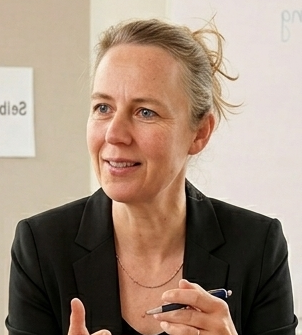

KI verstehen
Wie generative KI funktioniert, was sie kann und wo ihre Grenzen liegen — ohne eine Zeile Code.
Die praxisnahe Weiterbildung für kaufmännische Angestellte, Fachkräfte und Quereinsteiger, die ihre berufliche Zukunft aktiv gestalten wollen. In 6 Wochen, ohne Programmierkenntnisse – zu 100 % förderfähig über den Bildungsgutschein (Arbeitsagentur / Jobcenter).
Förderfähig über Bildungsgutschein · 12 Plätze · deutschlandweit
KI verändert kaufmännische Berufe grundlegend. Die Frage ist nicht, ob dieser Wandel kommt – sondern ob du ihn in Zukunft aktiv mitgestaltest.
Du bist aktuell arbeitssuchend oder orientierst dich beruflich neu? Genau jetzt ist der perfekte Moment für den nächsten Schritt.
Das Programm
Wie generative KI funktioniert, was sie kann und wo ihre Grenzen liegen — ohne eine Zeile Code.
Praxis mit dem Microsoft-KI-Ökosystem: Copilot in M365, Copilot Studio, Azure AI.
Use Cases bewerten, Business Case & ROI rechnen, eine KI-Roadmap und Change-Prozesse steuern.
Governance, DSGVO, EU AI Act und Responsible AI — rechtssicher und ethisch fundiert.
Externer Abschluss
Die Zertifizierung (Exam AB-731) richtet sich an Fach- und Führungskräfte, die die Einführung von KI-Lösungen wie Microsoft 365 Copilot, Azure AI und Microsoft Foundry im Unternehmen vorantreiben. Der Fokus liegt nicht auf technischem Coding, sondern auf der Bewertung von Geschäftswerten, dem Change Management bei der KI-Adoption sowie verantwortungsvoller Governance und Datensicherheit.
Zusätzlich erhältst Du das Trägerzertifikat der Tietoa GmbH über die erfolgreiche Teilnahme an der Maßnahme.
Curriculum
Vom Grundverständnis über die Microsoft-Tools bis zum eigenen Abschlussprojekt — eine durchgehende Linie von „verstehen" zu „im Betrieb umsetzen".
Aus der Praxis
Keine Theorie-Übungen. Wir arbeiten an echten Aufgaben – und du nimmst die Ergebnisse mit.
Wir haben KI-Funktionen direkt in Word, Excel, Outlook und Teams genutzt – so wie es im Arbeitsalltag tatsächlich gebraucht wird.
Wir haben Claude, ChatGPT, Perplexity und Co. direkt verglichen – und gelernt, welches Tool für welche Aufgabe wirklich das richtige ist.
Wir haben eine Webanwendung und ein Lerntagebuch erstellt – durch präzise Beschreibung an die KI, ohne eine Zeile Code zu schreiben.
Wir haben einen automatisierten News-Stream aufgebaut, der täglich relevante KI-Themen kuratiert und aufbereitet – ohne manuellen Aufwand.
Wir haben ein Bildmodell auf einen Corporate-Stil trainiert – damit Unternehmen KI-generierte Bilder konsistent in ihrer eigenen Bildsprache nutzen können.
Am Ende des Kurses erstellst du eine vollständige KI-Roadmap für einen realen Use Case – etwas, das du direkt ins nächste Bewerbungsgespräch oder in den nächsten Job mitnimmst.
Für wen
Du eine kaufmännische Ausbildung, ein Studium oder eine vergleichbare Berufserfahrung mitbringst.
Du Dich beruflich neu orientierst und ein zukunftssicheres Profil aufbauen willst.
Du KI im Unternehmen nicht nur anwenden, sondern aktiv mitgestalten möchtest.
Du lieber mit einer kleinen Gruppe lernst als in einem anonymen Online-Kurs.
Auf einen Blick
Wir halten unsere Gruppen bewusst klein: Die KI Pioniere November '26 haben genau 12 Plätze. Kein anonymer Kurs mit unzähligen Teilnehmenden, die still einem Dozenten lauschen. Wir wollen gemeinsam experimentieren, diskutieren und Neues entdecken — denn die Reise in die Welt der KI nimmt jeden Tag neue Formen an.
Unverbindlich Infos anfordernDeine Begleitung

Begleitet den Kurs als Lernbegleiterin und bringt langjährige Erfahrung mit digitalem Wandel in kaufmännischen Organisationen mit.
Verantwortet den fachlichen Schwerpunkt rund um das Microsoft-KI-Ökosystem und die strategische KI-Einführung im Unternehmen.
Häufige Fragen
Klingt interessant?
Hinterlasse deinen Vornamen und deine E-Mail — wir schicken dir alle Infos zum Kurs. Wenn du danach Lust hast, besprechen wir das weitere Vorgehen persönlich.